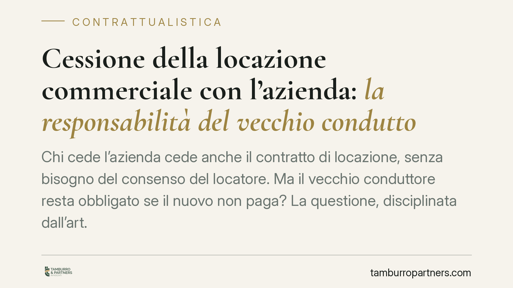

Cessione della locazione commerciale con l'azienda: la responsabilità del vecchio conduttore
Chi cede l'azienda cede anche il contratto di locazione, senza bisogno del consenso del locatore. Ma il vecchio conduttore resta obbligato se il nuovo non paga? La questione, disciplinata dall'art. 36 della legge sull'equo canone, incide sui rapporti tra cedente, cessionario e proprietario. Vediamo il quadro normativo e cosa fare in concreto.

Il fatto e la questione
Quando un imprenditore vende o affitta la propria azienda, insieme ai beni trasferisce spesso anche il contratto di locazione dell'immobile in cui l'attività si svolge. La legge consente questo passaggio con un regime speciale, ma resta un nodo pratico ricorrente: se il nuovo conduttore smette di pagare i canoni, il locatore può rivalersi sul vecchio inquilino? E con quali limiti?
La risposta dipende dalla corretta applicazione dell'art. 36 della legge 27 luglio 1978, n. 392 (cosiddetta legge sull'equo canone) e dagli orientamenti della Corte di Cassazione, Sezione III Civile, che nel tempo sono intervenuti sul punto. Le indicazioni che seguono riflettono il quadro consolidato; l'estremo di eventuali pronunce recenti va sempre verificato prima di ogni utilizzo processuale.
Inquadramento normativo
In via generale, la cessione del contratto è disciplinata dall'art. 1406 del codice civile e richiede il consenso del contraente ceduto: nel caso della locazione, il locatore. Anche la sublocazione e la cessione della locazione trovano regola negli artt. 1594 e 1595 c.c., che le ammettono salvo patto contrario.
L'art. 36 della legge 392/1978 introduce però una deroga rilevante per le locazioni destinate ad attività d'impresa. Quando la cessione del contratto avviene insieme alla cessione o all'affitto dell'azienda, il conduttore può cedere la locazione anche senza il consenso del locatore, purché gli comunichi l'operazione. La ratio è favorire la libera circolazione dell'azienda, evitando che il proprietario dell'immobile possa bloccare il trasferimento dell'attività.
Lo stesso art. 36 riconosce al locatore una tutela: egli può opporsi alla cessione per gravi motivi entro trenta giorni dalla comunicazione. Se non lo fa, la cessione produce i suoi effetti.
La posizione del conduttore cedente
Il punto più delicato riguarda la sorte del vecchio conduttore dopo la cessione. La giurisprudenza sull'art. 36 non è del tutto univoca.
Un orientamento consolidato afferma che il cedente non è liberato automaticamente: qualora il locatore non abbia espressamente liberato il vecchio conduttore, questi resta obbligato per le obbligazioni derivanti dal contratto anche dopo il trasferimento. In questa prospettiva la responsabilità del cedente ha carattere tendenzialmente solidale con quella del cessionario.
Un diverso indirizzo valorizza invece la natura sussidiaria della responsabilità del cedente, richiedendo che il locatore agisca prima nei confronti del nuovo conduttore (inadempiente) e solo dopo, in caso di esito negativo, si rivolga al cedente. Chi sostiene questa lettura richiama la logica del cosiddetto *beneficium ordinis*, cioè l'ordine di escussione tra i coobbligati.
La differenza è tutt'altro che teorica: incide su chi il locatore deve mettere in mora per primo e sul momento in cui il cedente può essere chiamato a pagare. Per questo, in sede di redazione o di lettura di un contratto, è essenziale ricostruire quale regime concretamente operi.
Implicazioni pratiche
Per il locatore: la mancata opposizione nei termini consolida la cessione. La possibilità di rivalersi sul cedente non è scontata e dipende dall'assenza di una liberazione espressa e dall'orientamento applicabile.
Per il conduttore cedente: il trasferimento dell'azienda non chiude i conti con il locatore. Senza liberazione formale, l'esposizione per i canoni futuri del cessionario può permanere.
Per il conduttore cessionario: subentra nel contratto alle condizioni originarie e diventa il primo obbligato verso il locatore.
Cosa fare in concreto
- Comunicate per iscritto la cessione al locatore, con PEC o raccomandata a/r, indicando data del trasferimento e dati del cessionario: la comunicazione fa decorrere i trenta giorni per l'eventuale opposizione.
- Richiedete la liberazione espressa del cedente: è lo strumento più sicuro per il vecchio conduttore per non restare esposto ai canoni futuri. Fatela risultare per iscritto.
- Verificate le clausole del contratto originario: presenza di divieti, garanzie, fideiussioni o previsioni sulla responsabilità in caso di cessione.
- Locatore: mettete in mora tempestivamente il conduttore inadempiente, individuando con precisione il soggetto obbligato prima di agire, per evitare vizi processuali.
- Conservate la documentazione di ogni passaggio: comunicazioni, ricevute PEC, accordi di liberazione e stato dei pagamenti.
Data la non piena uniformità degli orientamenti, consigliamo di far valutare la singola posizione prima di inviare diffide o instaurare un giudizio.
---
Contributo informativo a cura di Tamburro & Partners - Avv. Giuseppe Tamburro. Non costituisce parere legale.
Ogni contratto ha il suo equilibrio.
Se vuoi una revisione delle clausole o una redazione su misura, scrivi allo studio. Ti rispondiamo entro un giorno lavorativo.